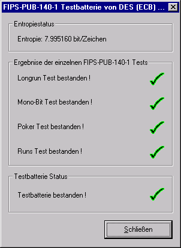
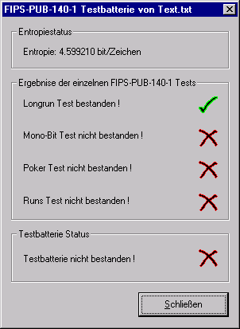

Sie erreichen diesen Dialog über den Menüeintrag Analyse \ Zufallsanalyse \ FIPS PUB-140-1 Testbatterie. Voraussetzung ist, dass Sie ein Dokument von mindestens 2500 Bytes Länge geladen haben.
Das Dialogfenster der FIPS-PUB-140-1-Testbatterie zeigt das folgende Bild:

In diesem Dialog können keine Parameter eingestellt werden: Die einzelnen Tests der FIPS-PUB-140-1-Testbatterie werden automatisch mit festgelegten Standardeinstellungen ausgeführt.
Unter Entropiestatus erhalten Sie zusätzlich die Entropie des untersuchten Dokuments. Für jeden einzelnen Test in der Batterie wird angezeigt, ob der Test bestanden wurde oder nicht.
Die Testbatterie ist bestanden, wenn jeder der vier Tests bestanden ist.
Werden die Kriterien von einem oder mehreren Tests nicht erfüllt, kommt folgendes Fenster:
